Hitori Gotoh (Bocchi) – Lead Guitar
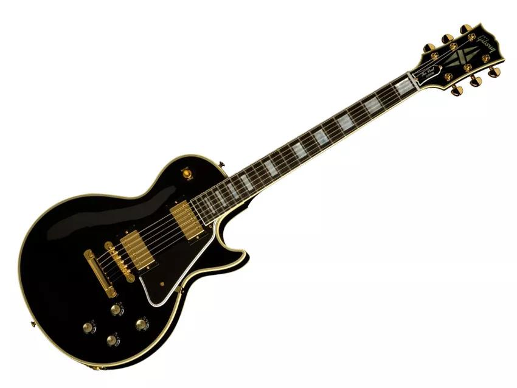 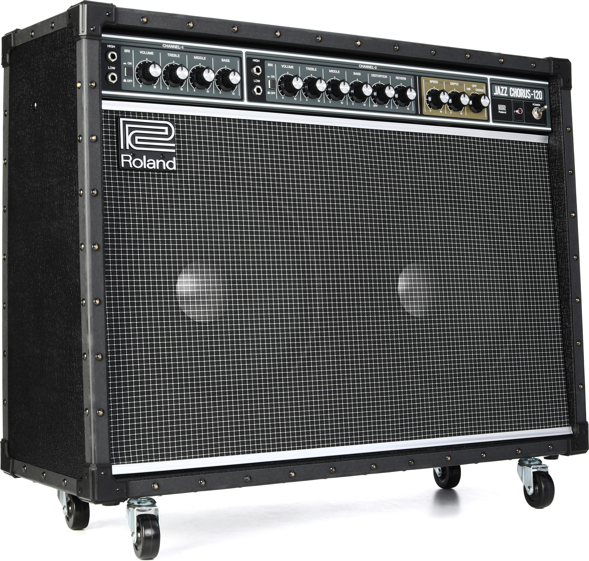 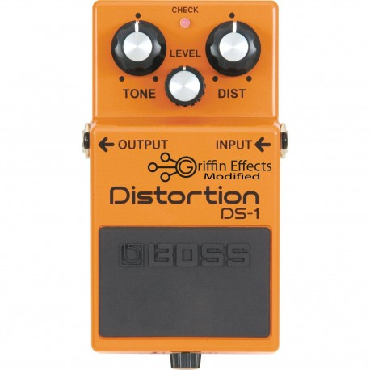 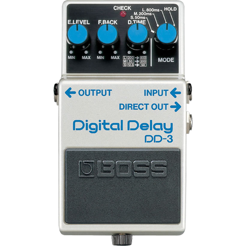- Guitar: Gibson Les Paul Custom (Cherry Red)
- Amp: Roland JC-120 Jazz Chorus
- Effects: BOSS DS-1 Distortion, BOSS DD-3 Delay
Bocchi’s Les Paul symbolizes her determination and passion for music. She loves experimenting with tone and creates her iconic emotional sound using classic analog pedals.
Nijika Ijichi – Drums
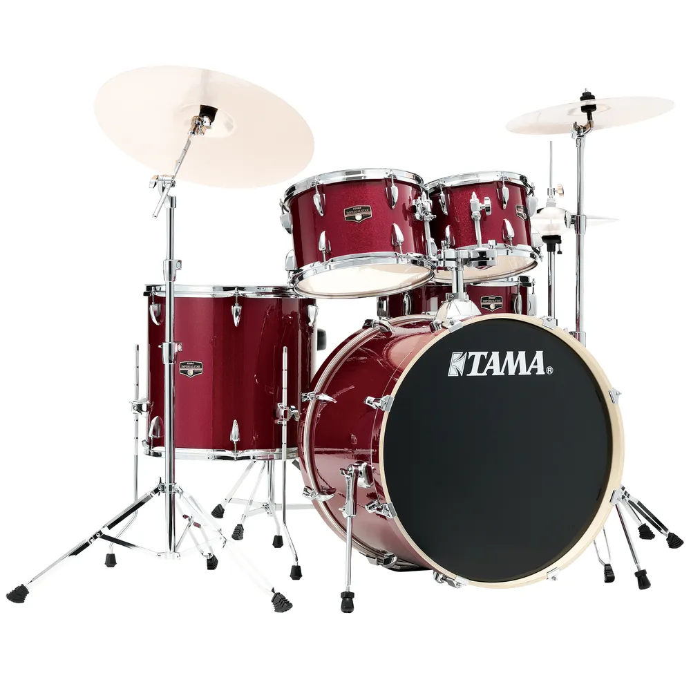 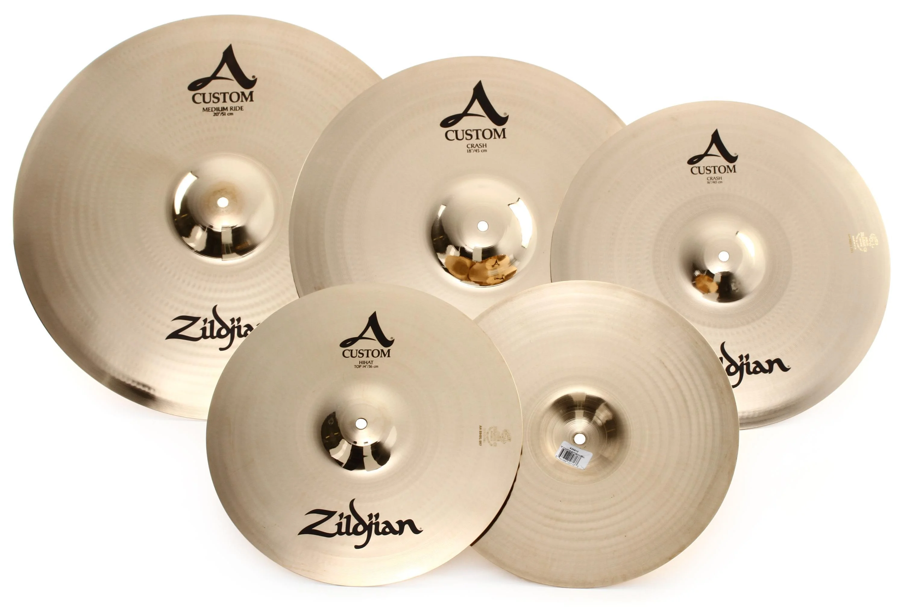 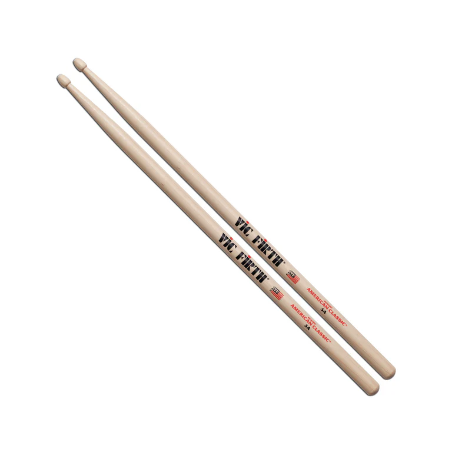- Drum Kit: Pearl Masters Maple Complete
- Cymbals: Zildjian A Custom Series
- Sticks: Vic Firth 5A
Nijika’s drum kit is tuned for bright, crisp hits to match her energetic and upbeat drumming style.
Ryo Yamada – Bass
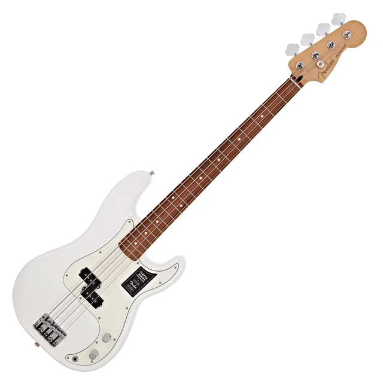 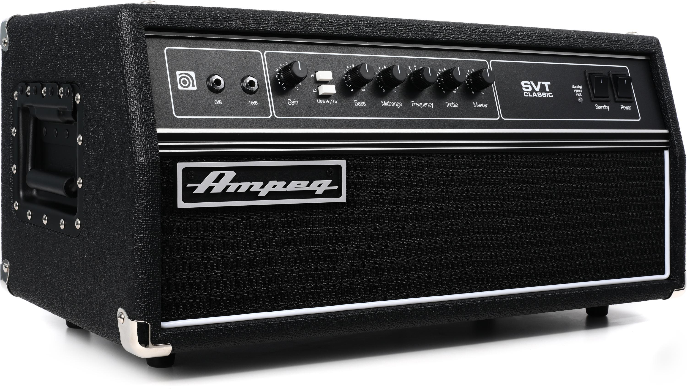 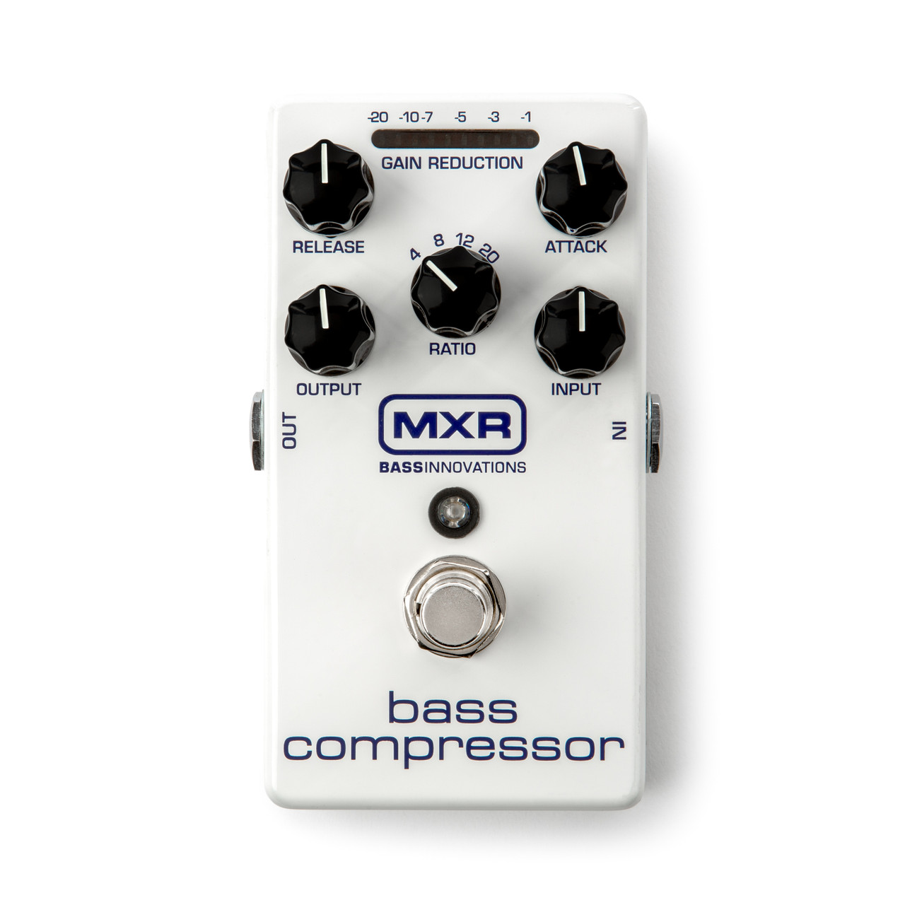- Bass: Fender American Pro Percision Bass (Vintage White)
- Amp: Ampeg SVT Classic
- Pedals: MXR Bass Compressor
Ryo’s bass tone is deep and clean, adding a steady foundation for Kessoku Band’s sound.
Ikuyo Kita – Guitar & Vocals
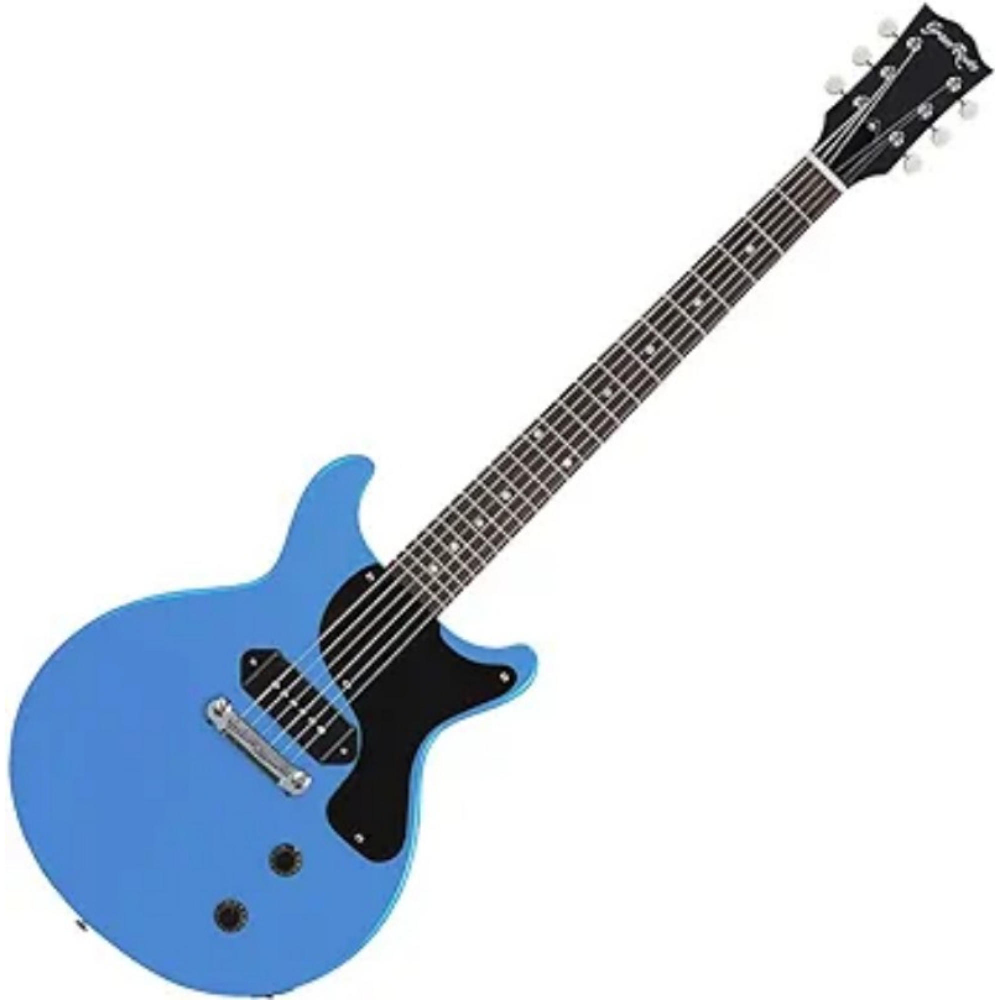 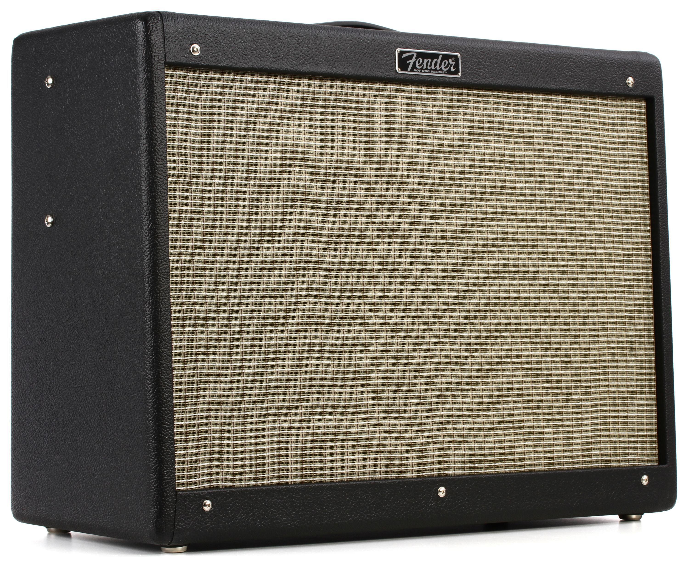
- Guitar: Fender Telecaster
- Amp: Fender Hot Rod Deluxe
- Mic: Shure SM58
Kita’s bright Telecaster tone complements her cheerful vocals, giving balance to Bocchi’s heavier sound.